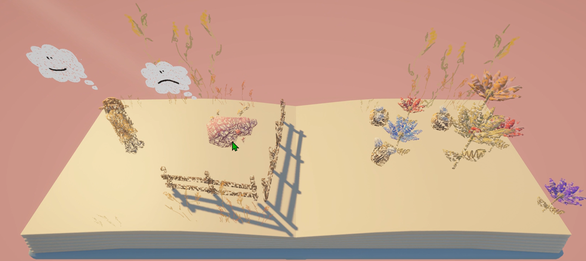
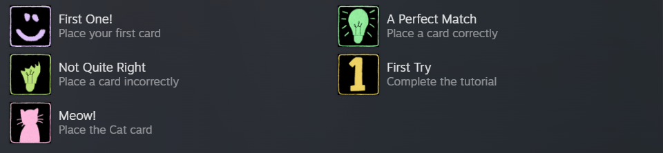
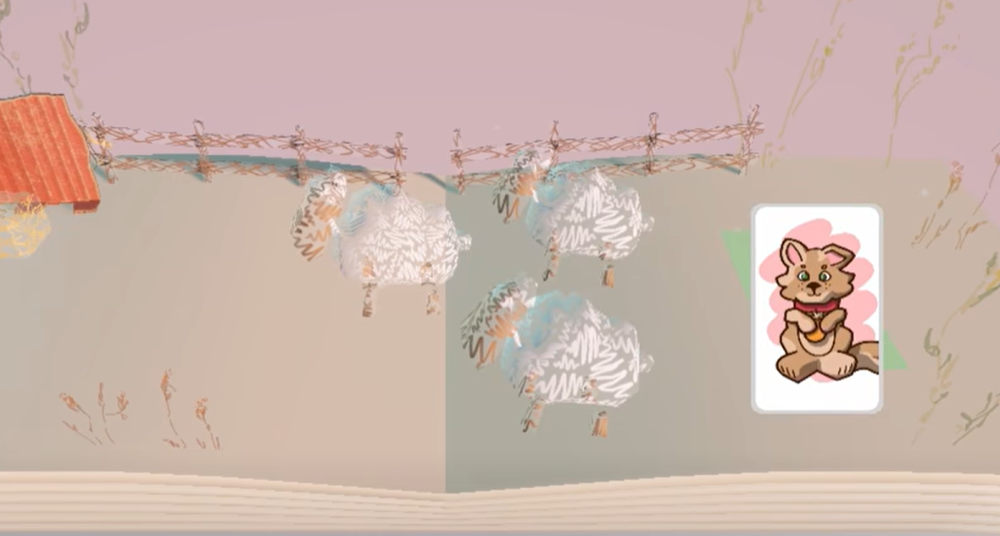
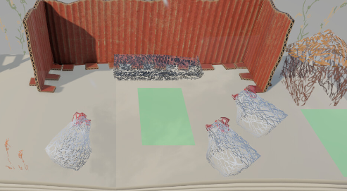
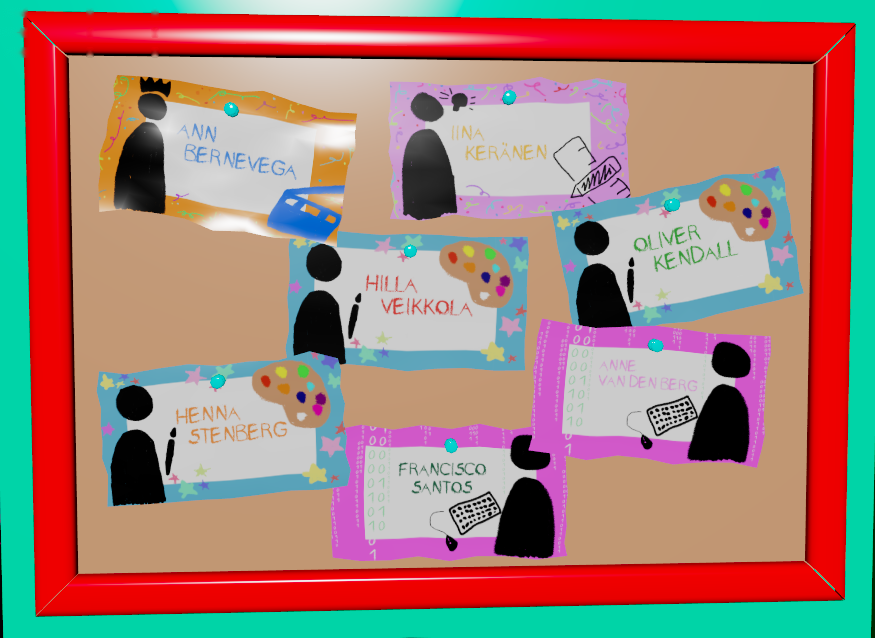

Bringing a child’s imagination to life through interactive storybooks.
Once Upon a Page is a cozy educational puzzle game developed by a seven-person international team at KAMK University of Applied Sciences. As Lead Programmer, I helped prototype the game, architected the gameplay systems, implemented Steam integration, and guided the transition from Unreal Engine 5 to Unity.
In-engine screenshot · sketchbook spread coming to life
EngineUnreal Engine 5 → Unity 6
LanguageC#
PlatformWindows PC
Team7 Developers
GenreEducational Puzzle
ReleaseSteam Demo
Pg. 01 Overview
A storybook where every drawing becomes reality.
Players solve interactive storybook puzzles by dragging illustrated cards onto the page. Every object transforms from a hand-drawn sketch into a fully realized 3D object, encouraging experimentation without punishment. Instead of failing, incorrect combinations produce playful reactions, making exploration part of the learning experience.

sketchreality
← drag to turn the drawing into the game
Pg. 02 My Role
Lead Programmer
My responsibility was designing and implementing the game’s core gameplay systems while ensuring the programming team maintained a scalable and maintainable codebase throughout development.
Gameplay Systems
Level Management
Steam Integration
Audio Systems
Prototype
Pg. 03 – 06 The Journey
From pencil sketch to Steam
Four chapters, from the first Unreal prototype to a shipped Steam demo. Turn the pages.
Every project starts with a proof of concept. Before production moved to Unity, I prototyped the game’s core card interaction system in Unreal Engine 5 using Blueprints. This prototype explored how illustrated cards could be dragged onto the page, transforming simple drawings into interactive objects and validating the project’s central gameplay mechanic.
Although the final game was developed in Unity, this early prototype established the interaction flow and gameplay foundation that carried through to the shipped Steam release.
I began the project by prototyping the core gameplay systems in Unreal Engine 5, establishing the foundation for the card-based interaction mechanics. As development progressed, the team decided to continue production in Unity to better align with everyone’s experience and accelerate development. As Lead Programmer, I guided the transition, rebuilding systems in Unity and ensuring the project maintained momentum all the way to its Steam release.
“The game mattered more than the engine.”
Pg. 05 · Systems
Building the Book
Rebuilt in Unity, these are the systems I designed and implemented so the whole team could keep adding pages to the storybook.
Gameplay Systems
Created the card interaction framework that powers every puzzle inside the storybook.
Level Management
Built the complete page transition system that animates books opening, closing, and changing between levels.
Audio Systems
Solved runtime audio spawning issues by redesigning how object events were triggered.
0 / 7Achievements Implemented

Pg. 06 · Steam Integration
Every Achievement Works
Using Facepunch.Steamworks, I implemented every achievement from scratch. The documentation required significantly more research than the official tutorials, but the final implementation shipped successfully in the Steam demo.
Every environment begins as a pencil drawing before transforming into a living 3D scene.

Hand-drawn Sheep

Barnyard Chickens
Pg. 08 Try It
Drag a card onto the page
A tiny re-creation of the core idea: sketches become real, and wrong cards only make the page giggle. Drag a card to a spot, or tap a card and then tap a spot.
Your hand
Four cards. Only some of them belong on this page.
0 / 3 placed
Made for this page to show the idea. It is not game content or code.

Pg. 09 The Team
Seven makers, one storybook.
Once Upon a Page was built by an international team of seven at KAMK University of Applied Sciences. Every card on the board is a person who helped turn a stack of drawings into a game on Steam.
Pg. 10 Play
Play Once Upon a Page
Experience the card mechanics and storybook world yourself.